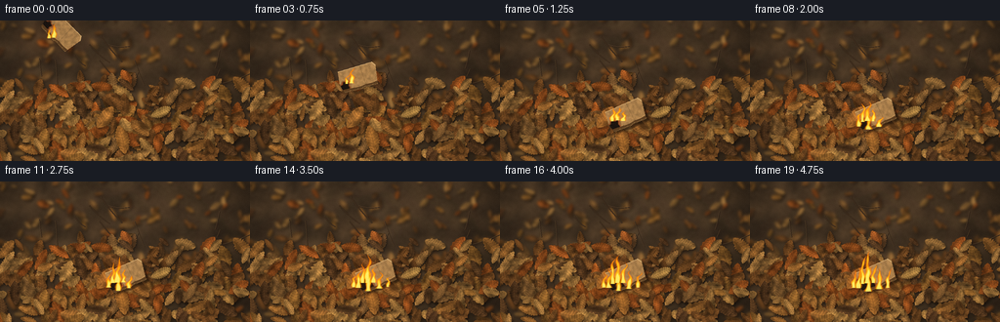
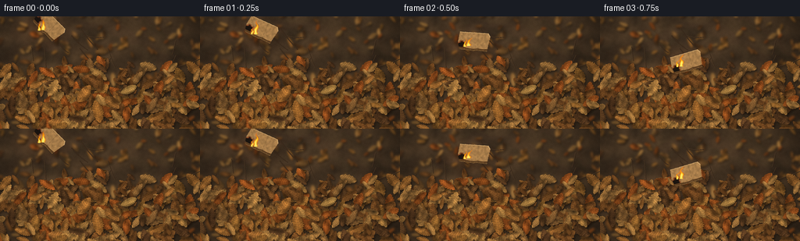

CODING AGENTS AS PIXEL WORLD MODELS
traex/GPT-6.1-Sol · material_0025
点击播放 · 原生 RGB 像素
逐轮保存的候选
回放视频、检查图与代码变化。
每份候选均可单独播放。实际图片检查记录在下方工具轨迹中。
候选 01播放与检查图
点击播放 · 原生 RGB 像素


展开代码变化
--- 上一保存版本
+++ 本次保存版本
@@ -0,0 +1,278 @@
+from pathlib import Path
+import math, json
+import numpy as np
+from PIL import Image, ImageDraw, ImageFilter
+import artifact_io
+
+ROOT=Path(__file__).resolve().parent
+SPEC=json.loads((ROOT/'task_spec.json').read_text())
+W,H=SPEC['width'],SPEC['height']; S=3
+WW,HH=W*S,H*S
+rng=np.random.default_rng(48015)
+
+def noise(w,h,scale,seed):
+ r=np.random.default_rng(seed)
+ a=r.random((max(2,int(h/scale)+2),max(2,int(w/scale)+2))).astype('float32')
+ return np.array(Image.fromarray(a).resize((w,h),Image.Resampling.BICUBIC))
+
+# Leaf litter, lit by soft afternoon light. Everything is constructed from geometry.
+yy,xx=np.mgrid[0:HH,0:WW]/S
+n0=noise(WW,HH,42,2); n1=noise(WW,HH,7,3); n2=noise(WW,HH,1.4,4)
+light=0.85+0.13*np.sin(xx/64)+0.07*(1-yy/H)
+base=np.stack([51+29*n0+9*n1,39+21*n0+7*n1,27+13*n0+5*n1],-1)*light[...,None]
+base+=(n2[...,None]-.5)*5
+scene=Image.fromarray(np.uint8(np.clip(base,0,255))).convert('RGBA')
+
+def leaf_sprite(length, breadth, color, seed, kind=0):
+ r=np.random.default_rng(seed)
+ l=int(length*S); b=int(breadth*S)
+ pw=b+18*S; ph=l+12*S
+ cx=pw/2; top=5*S; bot=top+l
+ # Irregular, asymmetrical lobes of dry oak leaves, mixed with narrow beech leaves.
+ levels=np.linspace(0,1,25)
+ edge=[]
+ for side in [-1,1]:
+ points=[]
+ for u in levels:
+ shape=(math.sin(math.pi*u)**.65)
+ if kind==0:
+ shape*=.72+.26*math.sin(u*math.pi*11+.4)**2
+ elif kind==1:
+ shape*=.85+.15*math.sin(u*math.pi*19)**2
+ else:
+ shape*=.70+.30*math.sin(u*math.pi*7)**2
+ rad=b*.49*shape*(.89+.16*r.random())
+ spine=cx+math.sin(u*math.pi)*b*.055
+ points.append((spine+side*rad,top+u*l))
+ edge.extend(points if side==-1 else points[::-1])
+ mask=Image.new('L',(pw,ph)); md=ImageDraw.Draw(mask)
+ md.polygon(edge,fill=255)
+ y,x=np.mgrid[0:ph,0:pw]
+ uu=(y-top)/l; across=(x-cx)/(b*.5)
+ cloud=noise(pw,ph,5*S,seed+1)
+ fine=noise(pw,ph,1.1*S,seed+2)
+ lighting=1+.16*(-across)+.09*np.sin(across*5+uu*3)-.12*across**2
+ lighting+=(cloud-.5)*.40+(fine-.5)*.14
+ rgb=np.array(color)[None,None,:]*lighting[...,None]
+ rgb+=np.stack([cloud*10,cloud*6,cloud*2],-1)
+ # Small brown fungal stains and papery discolorations.
+ for k in range(int(length/5)):
+ px=r.uniform(cx-b*.36,cx+b*.36); py=r.uniform(top,bot)
+ dist=((x-px)/(r.uniform(.5,2.5)*S))**2+((y-py)/(r.uniform(.8,3)*S))**2
+ stain=np.exp(-dist*.7)*r.uniform(.05,.35)
+ rgb*=1-stain[...,None]
+ out=Image.fromarray(np.uint8(np.clip(rgb,0,255))).convert('RGBA')
+ out.putalpha(mask)
+ details=Image.new('RGBA',(pw,ph)); d=ImageDraw.Draw(details)
+ dark=tuple(int(v*.63) for v in color)+(155,)
+ pale=tuple(min(255,int(v*1.23)) for v in color)+(135,)
+ # Fine central vein and branching secondary venation.
+ spine=[(cx+math.sin(u*math.pi)*b*.055,top+u*l) for u in np.linspace(0,1,16)]
+ d.line(spine, fill=dark,width=max(1,int(.42*S)))
+ d.line([(x+.5*S,y) for x,y in spine],fill=pale,width=1)
+ for u in np.linspace(.13,.89,8):
+ sx=cx+math.sin(u*math.pi)*b*.055; sy=top+u*l
+ rad=b*.44*math.sin(math.pi*u)**.65
+ for side in [-1,1]:
+ ex=sx+side*rad; ey=sy-l*.09
+ mid=(sx+side*rad*.53,sy-l*.065)
+ d.line([(sx,sy),mid,(ex,ey)],fill=dark,width=1)
+ for v in [.55,.78]:
+ bx=sx+(ex-sx)*v; by=sy+(ey-sy)*v
+ d.line([(bx,by),(bx+side*rad*.14,by-l*.05)],fill=dark,width=1)
+ d.line(edge+[edge[0]],fill=dark,width=1)
+ # A curled lip catches the daylight on one side.
+ d.line(edge[3:11],fill=pale,width=max(1,int(.55*S)))
+ # Short broken stalk.
+ d.line([(cx,bot-1),(cx+1.3*S,bot+5*S)],fill=tuple(int(v*.7) for v in color)+(255,),width=2)
+ details.putalpha(Image.fromarray((np.array(details.getchannel('A')).astype(float)*np.array(mask)/255).astype('uint8')))
+ out=Image.alpha_composite(out,details)
+ return out
+
+palette=[(119,76,37),(139,94,43),(157,103,48),(107,68,33),(170,123,64),(145,77,31),(91,61,35),(160,115,61),(128,90,49)]
+
+def put_leaf(im,x,y,l,b,angle,col,seed,kind=0,shadow=True):
+ sp=leaf_sprite(l,b,col,seed,kind).rotate(angle,Image.Resampling.BICUBIC,expand=True)
+ px=int(x*S-sp.width/2); py=int(y*S-sp.height/2)
+ if shadow:
+ sh=Image.new('RGBA',sp.size,(17,12,8,0)); sh.putalpha(sp.getchannel('A').point(lambda a:int(a*.50)).filter(ImageFilter.GaussianBlur(1.1*S)))
+ im.alpha_composite(sh,(px+int(1.2*S),py+int(1.8*S)))
+ im.alpha_composite(sp,(px,py))
+
+# Shallow depth of field in the distant litter along the upper border.
+for i in range(220):
+ y=rng.uniform(-12,145); x=rng.uniform(-20,276)
+ fac=.50+.60*y/H
+ l=rng.uniform(10,23)*fac; b=l*rng.uniform(.39,.66)
+ col=np.array(palette[rng.integers(len(palette))])*rng.uniform(.80,1.04)
+ put_leaf(scene,x,y,l,b,rng.uniform(0,360),tuple(col.astype(int)),1000+i,int(rng.integers(0,3)))
+scene=scene.filter(ImageFilter.GaussianBlur(1.25*S))
+# Dry twigs provide unobtrusive natural scale cues.
+d=ImageDraw.Draw(scene)
+for i in range(24):
+ x=rng.uniform(0,256); y=rng.uniform(20,140); a=rng.uniform(0,6.28); ll=rng.uniform(13,40)
+ pts=[((x+math.cos(a)*ll*u)*S,(y+math.sin(a)*ll*u+math.sin(u*3)*1.3)*S) for u in np.linspace(0,1,8)]
+ d.line(pts,fill=(46,32,21,255),width=3)
+ d.line([(x-1,y-1) for x,y in pts],fill=(96,74,49,255),width=1)
+# The mound: dense layered, crisp leaves with individualized weathering and veins.
+leaves=[]
+for i in range(330):
+ if i<230:
+ theta=rng.uniform(0,2*np.pi); rad=np.sqrt(rng.random())
+ x=131+117*rad*np.cos(theta); y=108+52*rad*np.sin(theta)
+ else:
+ x=rng.uniform(-12,268); y=rng.uniform(65,160)
+ l=rng.uniform(13,29)*(0.75+.36*y/H)
+ b=l*rng.uniform(.40,.64)
+ col=np.array(palette[rng.integers(len(palette))])*rng.uniform(.84,1.1)
+ leaves.append((x,y,l,b,rng.uniform(0,360),tuple(col.astype(int)),2500+i,int(rng.integers(0,3))))
+leaves.sort(key=lambda v:v[1]+rng.uniform(-13,13))
+for lf in leaves: put_leaf(scene,*lf)
+# Main focus leaves beneath the small piece of cardboard.
+for i,lf in enumerate([(107,100,27,16,-37,(163,106,48)),(144,111,24,14,51,(139,91,43)),(164,94,22,12,-66,(161,121,63)),(125,123,30,16,13,(147,95,42))]):
+ put_leaf(scene,*lf,3800+i,0)
+background=np.array(scene.convert('RGB')).astype(np.float32)
+
+# A ragged, corrugated scrap, with paper texture and an exposed fluted edge.
+CW,CH=46*S,31*S
+cy,cx=np.mgrid[0:CH,0:CW]/S
+card_noise=noise(CW,CH,2.4*S,5900); paper_fine=noise(CW,CH,.55*S,5901)
+cardpoly=[(3,5),(39,3),(42,7),(40,24),(35,25),(29,24.8),(22,26),(4,25),(2,18)]
+cmask=Image.new('L',(CW,CH)); ImageDraw.Draw(cmask).polygon([(x*S,y*S) for x,y in cardpoly],fill=255)
+cardmask=np.array(cmask)
+
+def cardboard(t,angle):
+ rgb=np.zeros((CH,CW,3),np.float32)
+ shade=.98+(.5-card_noise)*.18+(paper_fine-.5)*.10+cy[...,None][...,0]*.0005
+ rgb[:]=np.array([175,131,79])*shade[...,None]
+ # Light creases and irregular burn line spreading from the near-left corner.
+ crease=np.exp(-((cx-26-.09*cy)/.3)**2)*.15
+ rgb*=1-crease[...,None]
+ progress=max(0,t-.7)
+ radius=5+progress*1.6
+ dist=np.sqrt((cx-7)**2+((cy-21)*1.1)**2)
+ boundary=radius+(card_noise-.5)*2.8
+ burn=np.clip((boundary-dist+2)/3,0,1)
+ rgb=rgb*(1-burn[...,None])+np.array([30,23,18])[None,None,:]*burn[...,None]
+ fissure=(np.sin(cx*3.2+card_noise*8)*np.sin(cy*3.4)>0.64)&(burn>.65)
+ rgb[fissure]*=.52
+ glow=np.exp(-((dist-boundary)/.8)**2)*(.6+.4*np.sin(t*18+cx*.8)**2)
+ rgb+=glow[...,None]*np.array([87,24,2])
+ out=Image.fromarray(np.uint8(np.clip(rgb,0,255))).convert('RGBA');out.putalpha(cmask)
+ d=ImageDraw.Draw(out)
+ # Layered edge, showing the corrugation between kraft liners.
+ d.line([(4*S,25*S),(22*S,26*S),(29*S,24.8*S),(35*S,25*S),(40*S,24*S)],fill=(92,62,33,255),width=3*S)
+ for x in np.arange(5,39,1.6):
+ y=25+(1 if x<23 else 0)
+ d.arc((x*S,(y-.7)*S,(x+1.5)*S,(y+1.1)*S),0,180,fill=(201,156,95,255),width=1)
+ d.line([(x*S,(y+.5)*S),((x+.35)*S,(y+1.4)*S)],fill=(45,31,18,255),width=1)
+ d.line([(3*S,5*S),(39*S,3*S),(42*S,7*S)],fill=(207,166,109,255),width=1*S)
+ return out.rotate(angle,Image.Resampling.BICUBIC,expand=True)
+
+Y,X=np.mgrid[0:HH,0:WW].astype(np.float32)/S
+
+def turb(x,y,t):
+ return (np.sin(x*.41+y*.32-t*6.1)+.50*np.sin(x*.97-y*.64+t*10.3)+.24*np.sin(x*1.86+y*1.21-t*13.7)) / 1.74
+
+def render_fire(img,t,anchors):
+ field=np.zeros((HH,WW),np.float32); core=np.zeros_like(field)
+ for k,(bx,by,hei,wid) in enumerate(anchors):
+ hei*=.87+.13*np.sin(t*9+k*2.7)+.075*np.sin(t*19+k)
+ up=(by-Y)/hei
+ active=(up>=-.10)&(up<1)
+ phase=k*1.47
+ axis=bx+(np.sin(up*7-t*8+phase)*2.0+np.sin(up*13+t*5+phase)*.9)*np.maximum(up,0)+2.6*up**2
+ width=wid*np.maximum(1-up,0.002)**.72*(.90+.22*np.sin(up*12-t*11+k))
+ rr=(X-axis)/(width+.08)
+ f=np.exp(-rr**2*1.9)*np.maximum(1-up,0)**.35
+ f*=active
+ f*=1+.36*turb(X+k,Y,t)
+ field=np.maximum(field,f)
+ cc=np.exp(-rr**2*3)*np.maximum(1-up*2.1,0)*active
+ core=np.maximum(core,cc)
+ flame_alpha=np.clip((field-.115)/.46,0,1)
+ heat=np.clip((field-.12)*.95+core*.6,0,1)
+ # Red-orange thin edges, amber bodies, and luminous yellow cores.
+ rgb=np.stack([255-8*heat,49+188*heat**.72,3+102*heat**3.5],-1)
+ img=img*(1-flame_alpha[...,None]*.96)+rgb*flame_alpha[...,None]*.96
+ # Optical glow kept very local so the leaf textures remain visible.
+ glow=np.array(Image.fromarray(np.uint8(flame_alpha*255)).filter(ImageFilter.GaussianBlur(2.1*S)))/255
+ img+=glow[...,None]*np.array([24,8,0])
+ return img
+
+frames=[]
+for f in range(SPEC['frames']):
+ t=f/SPEC['fps']
+ # The already-burning scrap is tossed in from the upper left and tumbles down.
+ if t<1.0:
+ q=t/1.0
+ bx=63+65*q; by=12+83*q*q
+ angle=-48+82*q
+ anchors=[(bx-8,by+4,16+3*np.sin(t*8),3.5),(bx-13,by+5,11,2.3)]
+ else:
+ q=min((t-1)/.25,1)
+ bx=128+q*2; by=95+q*2
+ angle=34-q*13
+ spread=max(0,t-1.15)
+ height=18+min(20,spread*6.1)
+ anchors=[(bx-10,by+4,height,4.4),(bx-15,by+5,height*.73,3.2),(bx-4,by+5,height*.66,3.4)]
+ if spread>.7:
+ anchors.extend([(bx-19,by+10,12+spread*3,3.8),(bx+2,by+11,10+spread*4,4),(bx-9,by+13,15+spread*3.2,4)])
+ if spread>2:
+ anchors.extend([(bx+11,by+10,11+(spread-2)*5,3),(bx-24,by+10,13+(spread-2)*6,3.2)])
+ img=background.copy()
+ # Warm illumination on adjacent leaves, varying gently with the flames.
+ energy=(.83+.12*np.sin(t*17)+.05*np.sin(t*39))*(.45+min(1,max(0,t-1)*.25))
+ fall=np.exp(-(((X-(bx-8))/26)**2+((Y-(by+5))/17)**2))
+ img+=fall[...,None]*np.array([35,13,1])*energy
+ # Broad charred region gradually develops in the leaves immediately at contact.
+ if t>1.5:
+ burnt=np.exp(-(((X-121)/17)**2+((Y-104)/9)**2))*min(.24,(t-1.5)*.06)
+ img*=1-burnt[...,None]
+ lay=Image.fromarray(np.uint8(np.clip(img,0,255))).convert('RGBA')
+ c=cardboard(t,angle)
+ px=int(bx*S-c.width/2); py=int(by*S-c.height/2)
+ shadow=Image.new('RGBA',c.size,(17,11,7,0))
+ sa=c.getchannel('A').point(lambda a:int(a*(.2 if t<1 else .64))).filter(ImageFilter.GaussianBlur((4 if t<1 else 1)*S))
+ shadow.putalpha(sa)
+ lay.alpha_composite(shadow,(px+3*S,py+(8 if t<1 else 2)*S))
+ lay.alpha_composite(c,(px,py))
+ img=np.array(lay.convert('RGB')).astype(np.float32)
+ # Grey translucent wisps rise and drift in the slight breeze, continuous in time.
+ if t>.35:
+ smoke=np.zeros((HH,WW),np.float32)
+ for k in range(13):
+ age=(t*.63+k*.117)%1.8
+ if age>t*.8: continue
+ sy=by-7-age*36
+ sx=bx-10+age*11+math.sin(age*4+k)*3
+ rad=3+age*7
+ blob=np.exp(-((X-sx)/(rad*1.13))**2-((Y-sy)/(rad*1.55))**2)
+ blob*=.018*(1-age/2.2)*min(1,t*.6)
+ smoke+=blob
+ smoke*=np.clip(.7+.34*turb(X*.44,Y*.47,t*.35),.1,1)
+ sc=np.stack([126+Y*.04,128+Y*.035,128+Y*.02],-1)
+ smoke=np.clip(smoke,0,.14)
+ img=img*(1-smoke[...,None])+sc*smoke[...,None]
+ img=render_fire(img,t,anchors)
+ # Tiny rising sparks, not a shower: the leaves catch locally.
+ if t>1:
+ ember=Image.new('RGBA',(WW,HH)); ed=ImageDraw.Draw(ember)
+ for k in range(7):
+ age=(t*.9+k*.23)%1.7
+ if age>1.18 or (k%3==0 and t<3):continue
+ ex=bx-13+k*2+age*6+math.sin(k+age*3)*2
+ ey=by+4-age*30
+ op=int(215*(1-age/1.5))
+ ed.line([(ex*S,ey*S),((ex-.3)*S,(ey+1.1)*S)],fill=(255,161+int(50*(1-age)),39,op),width=1)
+ ea=np.array(ember).astype(float); aa=ea[:,:,3:]/255
+ img=img*(1-aa)+ea[:,:,:3]*aa
+ # Lens-like subtle corner falloff and slight grain; no camera motion.
+ vignette=1-.10*((X-128)/168)**2-.06*((Y-83)/111)**2
+ img*=vignette[...,None]
+ out=Image.fromarray(np.uint8(np.clip(img,0,255))).resize((W,H),Image.Resampling.LANCZOS)
+ arr=np.array(out).astype(float)
+ grain=np.random.default_rng(8500+f).normal(0,.45,(H,W,1))
+ frames.append(np.uint8(np.clip(arr+grain,0,255)))
+artifact_io.save(np.stack(frames),ROOT)
+print('Saved', len(frames), 'RGB frames:', np.stack(frames).shape)
可观测工具轨迹
实际执行的命令与返回图片。
命令 1exit 0
/bin/bash -lc 'ls -la && cat prompt.txt && cat GENERATION_RULES.md && cat task_spec.json'
命令 2exit 0
/bin/bash -lc 'cat artifact_io.py'
命令 3exit 0
/bin/bash -lc "cat > generate.py <<'PY'
from pathlib import Path
import math, json
import numpy as np
from PIL import Image, ImageDraw, ImageFilter
import artifact_io
ROOT=Path(__file__).resolve().parent
SPEC=json.loads((ROOT/'task_spec.json').read_text())
W,H=SPEC['width'],SPEC['height']; S=3
WW,HH=W*S,H*S
rng=np.random.default_rng(48015)
def noise(w,h,scale,seed):
r=np.random.default_rng(seed)
a=r.random((max(2,int(h/scale)+2),max(2,int(w/scale)+2))).astype('float32')
return np.array(Image.fromarray(a).resize((w,h),Image.Resampling.BICUBIC))
# Leaf litter, lit by soft afternoon light. Everything is constructed from geometry.
yy,xx=np.mgrid[0:HH,0:WW]/S
n0=noise(WW,HH,42,2); n1=noise(WW,HH,7,3); n2=noise(WW,HH,1.4,4)
light=0.85+0.13*np.sin(xx/64)+0.07*(1-yy/H)
base=np.stack([51+29*n0+9*n1,39+21*n0+7*n1,27+13*n0+5*n1],-1)*light[...,None]
base+=(n2[...,None]-.5)*5
scene=Image.fromarray(np.uint8(np.clip(base,0,255))).convert('RGBA')
def leaf_sprite(length, breadth, color, seed, kind=0):
r=np.random.default_rng(seed)
l=int(length*S); b=int(breadth*S)
pw=b+18*S; ph=l+12*S
cx=pw/2; top=5*S; bot=top+l
# Irregular, asymmetrical lobes of dry oak leaves, mixed with narrow beech leaves.
levels=np.linspace(0,1,25)
edge=[]
for side in [-1,1]:
points=[]
for u in levels:
shape=(math.sin(math.pi*u)**.65)
if kind==0:
shape*=.72+.26*math.sin(u*math.pi*11+.4)**2
elif kind==1:
shape*=.85+.15*math.sin(u*math.pi*19)**2
else:
shape*=.70+.30*math.sin(u*math.pi*7)**2
rad=b*.49*shape*(.89+.16*r.random())
spine=cx+math.sin(u*math.pi)*b*.055
points.append((spine+side*rad,top+u*l))
edge.extend(points if side==-1 else points[::-1])
mask=Image.new('L',(pw,ph)); md=ImageDraw.Draw(mask)
md.polygon(edge,fill=255)
y,x=np.mgrid[0:ph,0:pw]
uu=(y-top)/l; across=(x-cx)/(b*.5)
cloud=noise(pw,ph,5*S,seed+1)
fine=noise(pw,ph,1.1*S,seed+2)
lighting=1+.16*(-across)+.09*np.sin(across*5+uu*3)-.12*across**2
lighting+=(cloud-.5)*.40+(fine-.5)*.14
rgb=np.array(color)[None,None,:]*lighting[...,None]
rgb+=np.stack([cloud*10,cloud*6,cloud*2],-1)
# Small brown fungal stains and papery discolorations.
for k in range(int(length/5)):
px=r.uniform(cx-b*.36,cx+b*.36); py=r.uniform(top,bot)
dist=((x-px)/(r.uniform(.5,2.5)*S))**2+((y-py)/(r.uniform(.8,3)*S))**2
stain=np.exp(-dist*.7)*r.uniform(.05,.35)
rgb*=1-stain[...,None]
out=Image.fromarray(np.uint8(np.clip(rgb,0,255))).convert('RGBA')
out.putalpha(mask)
details=Image.new('RGBA',(pw,ph)); d=ImageDraw.Draw(details)
dark=tuple(int(v*.63) for v in color)+(155,)
pale=tuple(min(255,int(v*1.23)) for v in color)+(135,)
# Fine central vein and branching secondary venation.
spine=[(cx+math.sin(u*math.pi)*b*.055,top+u*l) for u in np.linspace(0,1,16)]
d.line(spine, fill=dark,width=max(1,int(.42*S)))
d.line([(x+.5*S,y) for x,y in spine],fill=pale,width=1)
for u in np.linspace(.13,.89,8):
sx=cx+math.sin(u*math.pi)*b*.055; sy=top+u*l
rad=b*.44*math.sin(math.pi*u)**.65
for side in [-1,1]:
ex=sx+side*rad; ey=sy-l*.09
mid=(sx+side*rad*.53,sy-l*.065)
d.line([(sx,sy),mid,(ex,ey)],fill=dark,width=1)
for v in [.55,.78]:
bx=sx+(ex-sx)*v; by=sy+(ey-sy)*v
d.line([(bx,by),(bx+side*rad*.14,by-l*.05)],fill=dark,width=1)
d.line(edge+[edge[0]],fill=dark,width=1)
# A curled lip catches the daylight on one side.
d.line(edge[3:11],fill=pale,width=max(1,int(.55*S)))
# Short broken stalk.
d.line([(cx,bot-1),(cx+1.3*S,bot+5*S)],fill=tuple(int(v*.7) for v in color)+(255,),width=2)
details.putalpha(Image.fromarray((np.array(details.getchannel('A')).astype(float)*np.array(mask)/255).astype('uint8')))
out=Image.alpha_composite(out,details)
return out
palette=[(119,76,37),(139,94,43),(157,103,48),(107,68,33),(170,123,64),(145,77,31),(91,61,35),(160,115,61),(128,90,49)]
def put_leaf(im,x,y,l,b,angle,col,seed,kind=0,shadow=True):
sp=leaf_sprite(l,b,col,seed,kind).rotate(angle,Image.Resampling.BICUBIC,expand=True)
px=int(x*S-sp.width/2); py=int(y*S-sp.height/2)
if shadow:
sh=Image.new('RGBA',sp.size,(17,12,8,0)); sh.putalpha(sp.getchannel('A').point(lambda a:int(a*.50)).filter(ImageFilter.GaussianBlur(1.1*S)))
im.alpha_composite(sh,(px+int(1.2*S),py+int(1.8*S)))
im.alpha_composite(sp,(px,py))
# Shallow depth of field in the distant litter along the upper border.
for i in range(220):
y=rng.uniform(-12,145); x=rng.uniform(-20,276)
fac=.50+.60*y/H
l=rng.uniform(10,23)*fac; b=l*rng.uniform(.39,.66)
col=np.array(palette[rng.integers(len(palette))])*rng.uniform(.80,1.04)
put_leaf(scene,x,y,l,b,rng.uniform(0,360),tuple(col.astype(int)),1000+i,int(rng.integers(0,3)))
scene=scene.filter(ImageFilter.GaussianBlur(1.25*S))
# Dry twigs provide unobtrusive natural scale cues.
d=ImageDraw.Draw(scene)
for i in range(24):
x=rng.uniform(0,256); y=rng.uniform(20,140); a=rng.uniform(0,6.28); ll=rng.uniform(13,40)
pts=[((x+math.cos(a)*ll*u)*S,(y+math.sin(a)*ll*u+math.sin(u*3)*1.3)*S) for u in np.linspace(0,1,8)]
d.line(pts,fill=(46,32,21,255),width=3)
d.line([(x-1,y-1) for x,y in pts],fill=(96,74,49,255),width=1)
# The mound: dense layered, crisp leaves with individualized weathering and veins.
leaves=[]
for i in range(330):
if i<230:
theta=rng.uniform(0,2*np.pi); rad=np.sqrt(rng.random())
x=131+117*rad*np.cos(theta); y=108+52*rad*np.sin(theta)
else:
x=rng.uniform(-12,268); y=rng.uniform(65,160)
l=rng.uniform(13,29)*(0.75+.36*y/H)
b=l*rng.uniform(.40,.64)
col=np.array(palette[rng.integers(len(palette))])*rng.uniform(.84,1.1)
leaves.append((x,y,l,b,rng.uniform(0,360),tuple(col.astype(int)),2500+i,int(rng.integers(0,3))))
leaves.sort(key=lambda v:v[1]+rng.uniform(-13,13))
for lf in leaves: put_leaf(scene,*lf)
# Main focus leaves beneath the small piece of cardboard.
for i,lf in enumerate([(107,100,27,16,-37,(163,106,48)),(144,111,24,14,51,(139,91,43)),(164,94,22,12,-66,(161,121,63)),(125,123,30,16,13,(147,95,42))]):
put_leaf(scene,*lf,3800+i,0)
background=np.array(scene.convert('RGB')).astype(np.float32)
# A ragged, corrugated scrap, with paper texture and an exposed fluted edge.
CW,CH=46*S,31*S
cy,cx=np.mgrid[0:CH,0:CW]/S
card_noise=noise(CW,CH,2.4*S,5900); paper_fine=noise(CW,CH,.55*S,5901)
cardpoly=[(3,5),(39,3),(42,7),(40,24),(35,25),(29,24.8),(22,26),(4,25),(2,18)]
cmask=Image.new('L',(CW,CH)); ImageDraw.Draw(cmask).polygon([(x*S,y*S) for x,y in cardpoly],fill=255)
cardmask=np.array(cmask)
def cardboard(t,angle):
rgb=np.zeros((CH,CW,3),np.float32)
shade=.98+(.5-card_noise)*.18+(paper_fine-.5)*.10+cy[...,None][...,0]*.0005
rgb[:]=np.array([175,131,79])*shade[...,None]
# Light creases and irregular burn line spreading from the near-left corner.
crease=np.exp(-((cx-26-.09*cy)/.3)**2)*.15
rgb*=1-crease[...,None]
progress=max(0,t-.7)
radius=5+progress*1.6
dist=np.sqrt((cx-7)**2+((cy-21)*1.1)**2)
boundary=radius+(card_noise-.5)*2.8
burn=np.clip((boundary-dist+2)/3,0,1)
rgb=rgb*(1-burn[...,None])+np.array([30,23,18])[None,None,:]*burn[...,None]
fissure=(np.sin(cx*3.2+card_noise*8)*np.sin(cy*3.4)>0.64)&(burn>.65)
rgb[fissure]*=.52
glow=np.exp(-((dist-boundary)/.8)**2)*(.6+.4*np.sin(t*18+cx*.8)**2)
rgb+=glow[...,None]*np.array([87,24,2])
out=Image.fromarray(np.uint8(np.clip(rgb,0,255))).convert('RGBA');out.putalpha(cmask)
d=ImageDraw.Draw(out)
# Layered edge, showing the corrugation between kraft liners.
d.line([(4*S,25*S),(22*S,26*S),(29*S,24.8*S),(35*S,25*S),(40*S,24*S)],fill=(92,62,33,255),width=3*S)
for x in np.arange(5,39,1.6):
y=25+(1 if x<23 else 0)
d.arc((x*S,(y-.7)*S,(x+1.5)*S,(y+1.1)*S),0,180,fill=(201,156,95,255),width=1)
d.line([(x*S,(y+.5)*S),((x+.35)*S,(y+1.4)*S)],fill=(45,31,18,255),width=1)
d.line([(3*S,5*S),(39*S,3*S),(42*S,7*S)],fill=(207,166,109,255),width=1*S)
return out.rotate(angle,Image.Resampling.BICUBIC,expand=True)
Y,X=np.mgrid[0:HH,0:WW].astype(np.float32)/S
def turb(x,y,t):
return (np.sin(x*.41+y*.32-t*6.1)+.50*np.sin(x*.97-y*.64+t*10.3)+.24*np.sin(x*1.86+y*1.21-t*13.7)) / 1.74
def render_fire(img,t,anchors):
field=np.zeros((HH,WW),np.float32); core=np.zeros_like(field)
for k,(bx,by,hei,wid) in enumerate(anchors):
hei*=.87+.13*np.sin(t*9+k*2.7)+.075*np.sin(t*19+k)
up=(by-Y)/hei
active=(up>=-.10)&(up<1)
phase=k*1.47
axis=bx+(np.sin(up*7-t*8+phase)*2.0+np.sin(up*13+t*5+phase)*.9)*np.maximum(up,0)+2.6*up**2
width=wid*np.maximum(1-up,0.002)**.72*(.90+.22*np.sin(up*12-t*11+k))
rr=(X-axis)/(width+.08)
f=np.exp(-rr**2*1.9)*np.maximum(1-up,0)**.35
f*=active
f*=1+.36*turb(X+k,Y,t)
field=np.maximum(field,f)
cc=np.exp(-rr**2*3)*np.maximum(1-up*2.1,0)*active
core=np.maximum(core,cc)
flame_alpha=np.clip((field-.115)/.46,0,1)
heat=np.clip((field-.12)*.95+core*.6,0,1)
# Red-orange thin edges, amber bodies, and luminous yellow cores.
rgb=np.stack([255-8*heat,49+188*heat**.72,3+102*heat**3.5],-1)
img=img*(1-flame_alpha[...,None]*.96)+rgb*flame_alpha[...,None]*.96
# Optical glow kept very local so the leaf textures remain visible.
glow=np.array(Image.fromarray(np.uint8(flame_alpha*255)).filter(ImageFilter.GaussianBlur(2.1*S)))/255
img+=glow[...,None]*np.array([24,8,0])
return img
frames=[]
for f in range(SPEC['frames']):
t=f/SPEC['fps']
# The already-burning scrap is tossed in from the upper left and tumbles down.
if t<1.0:
q=t/1.0
bx=63+65*q; by=12+83*q*q
angle=-48+82*q
anchors=[(bx-8,by+4,16+3*np.sin(t*8),3.5),(bx-13,by+5,11,2.3)]
else:
q=min((t-1)/.25,1)
bx=128+q*2; by=95+q*2
angle=34-q*13
spread=max(0,t-1.15)
height=18+min(20,spread*6.1)
anchors=[(bx-10,by+4,height,4.4),(bx-15,by+5,height*.73,3.2),(bx-4,by+5,height*.66,3.4)]
if spread>.7:
anchors.extend([(bx-19,by+10,12+spread*3,3.8),(bx+2,by+11,10+spread*4,4),(bx-9,by+13,15+spread*3.2,4)])
if spread>2:
anchors.extend([(bx+11,by+10,11+(spread-2)*5,3),(bx-24,by+10,13+(spread-2)*6,3.2)])
img=background.copy()
# Warm illumination on adjacent leaves, varying gently with the flames.
energy=(.83+.12*np.sin(t*17)+.05*np.sin(t*39))*(.45+min(1,max(0,t-1)*.25))
fall=np.exp(-(((X-(bx-8))/26)**2+((Y-(by+5))/17)**2))
img+=fall[...,None]*np.array([35,13,1])*energy
# Broad charred region gradually develops in the leaves immediately at contact.
if t>1.5:
burnt=np.exp(-(((X-121)/17)**2+((Y-104)/9)**2))*min(.24,(t-1.5)*.06)
img*=1-burnt[...,None]
lay=Image.fromarray(np.uint8(np.clip(img,0,255))).convert('RGBA')
c=cardboard(t,angle)
px=int(bx*S-c.width/2); py=int(by*S-c.height/2)
shadow=Image.new('RGBA',c.size,(17,11,7,0))
sa=c.getchannel('A').point(lambda a:int(a*(.2 if t<1 else .64))).filter(ImageFilter.GaussianBlur((4 if t<1 else 1)*S))
shadow.putalpha(sa)
lay.alpha_composite(shadow,(px+3*S,py+(8 if t<1 else 2)*S))
lay.alpha_composite(c,(px,py))
img=np.array(lay.convert('RGB')).astype(np.float32)
# Grey translucent wisps rise and drift in the slight breeze, continuous in time.
if t>.35:
smoke=np.zeros((HH,WW),np.float32)
for k in range(13):
age=(t*.63+k*.117)%1.8
if age>t*.8: continue
sy=by-7-age*36
sx=bx-10+age*11+math.sin(age*4+k)*3
rad=3+age*7
blob=np.exp(-((X-sx)/(rad*1.13))**2-((Y-sy)/(rad*1.55))**2)
blob*=.018*(1-age/2.2)*min(1,t*.6)
smoke+=blob
smoke*=np.clip(.7+.34*turb(X*.44,Y*.47,t*.35),.1,1)
sc=np.stack([126+Y*.04,128+Y*.035,128+Y*.02],-1)
smoke=np.clip(smoke,0,.14)
img=img*(1-smoke[...,None])+sc*smoke[...,None]
img=render_fire(img,t,anchors)
# Tiny rising sparks, not a shower: the leaves catch locally.
if t>1:
ember=Image.new('RGBA',(WW,HH)); ed=ImageDraw.Draw(ember)
for k in range(7):
age=(t*.9+k*.23)%1.7
if age>1.18 or (k%3==0 and t<3):continue
ex=bx-13+k*2+age*6+math.sin(k+age*3)*2
ey=by+4-age*30
op=int(215*(1-age/1.5))
ed.line([(ex*S,ey*S),((ex-.3)*S,(ey+1.1)*S)],fill=(255,161+int(50*(1-age)),39,op),width=1)
ea=np.array(ember).astype(float); aa=ea[:,:,3:]/255
img=img*(1-aa)+ea[:,:,:3]*aa
# Lens-like subtle corner falloff and slight grain; no camera motion.
vignette=1-.10*((X-128)/168)**2-.06*((Y-83)/111)**2
img*=vignette[...,None]
out=Image.fromarray(np.uint8(np.clip(img,0,255))).resize((W,H),Image.Resampling.LANCZOS)
arr=np.array(out).astype(float)
grain=np.random.default_rng(8500+f).normal(0,.45,(H,W,1))
frames.append(np.uint8(np.clip(arr+grain,0,255)))
artifact_io.save(np.stack(frames),ROOT)
print('Saved', len(frames), 'RGB frames:', np.stack(frames).shape)
PY
python generate.py"命令 4exit 0
/bin/bash -lc "python - <<'PY'
import numpy as np
from pathlib import Path
from PIL import Image
p=Path('.')
a=np.load(p/'pixels.npz')['pixels']
assert a.shape==(144,256,20)
assert len(list((p/'frames').glob('*.png')))==20
assert all(Image.open(p/'frames'/f'{i:02d}.png').mode=='RGB' for i in range(20))
for name in ['generate.py','pixels.npz','index.html','inspection.png','transition_check.png']:
print(name,(p/name).stat().st_size,'bytes')
print('Verified 20 RGB frames, 256x144, 4 fps / 5 seconds.')
PY"保存候选 1 份；完成命令 4 次；可验证图片返回 0 张。原始 API 响应与完整日志保留在本地。